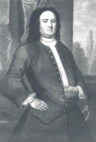

John Waters
Traditional sources state that John Waters was a native of Flushing, Long Island. He was born prior to 1700.
In 1709, John Walters was identified and paid as the clerk of the Commissioners of Indian Affairs.
He (John Walters) married Albany-area native Sara Winne in October 1721. By 1735, four of their children had been baptized in the Albany Dutch church where he was an occasional baptism sponsor. However, John Waters was a member of St. Peter's Anglican church.
He was known as a schoolteacher and was sometimes identified as a vintner.
In 1742, he was listed as a freeholder in the third ward. Two years later, he was ordered by the city council to surrender a portion of his land for use for fortificatons. His account also was paid from the city treasury.
John Waters died in August 1752 and was buried from the Albany Dutch church. At the least, his son and two daughters became Albany residents. Perhaps (but not with certainty), it was his descendants who carried on in Albany through the end of the eighteenth century!
Copy of a printed image of a portrait in the collection of the Munson Williams Proctor Institute, Utica, New York. The existence of the portrait perhaps signifies that we are missing an important part of his story.